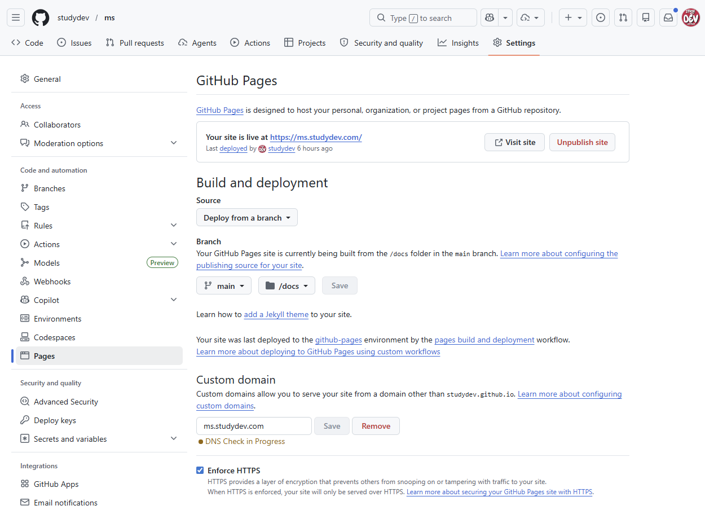

내가 만든 HTML 결과물을
인터넷으로 직접 알리고 싶다면!
브라우저에서 클릭 몇 번으로 OK!
잘 다듬어진 HTML 파일이 있다고요?!
GitHub에서 저장소(Repository) 만들고 → 파일 올리고 → URL로 공유할 수 있어요!
한 눈에 보는 흐름
index.html
main / docs/
*.github.io
공개 저장소 무료
별도 서버·비용 없음
HTTPS 기본
인증서 자동 발급·갱신
1~2분이면 배포
저장 즉시 전 세계 공개
저장소 만들고 Pages 켜기
GitHub에 로그인한 뒤, 브라우저에서 아래 순서로 클릭만 하면 끝입니다. GitHub 계정이 없다면 먼저 무료 가입하세요.
- 우측 상단 ＋ → New repository
- 저장소 이름 입력 (예:
home), Public 선택, Add a README 체크, Create repository - 저장소 화면에서 Settings → Pages 이동
- Source: Deploy from a branch → Branch는
main, 폴더는/(root)또는/docs선택 후 Save (실습은 /docs로 안내)
https://<계정>.github.io/<저장소>/ 형식입니다.
/docs 추천
웹사이트 파일과 다른 자료를 분리할 수 있어 관리가 편합니다. Jekyll 같은 Markdown을 정적 웹 소스코드로 빌드하는 도구를 쓰지 않을 거라면, 해당 폴더에 .nojekyll이라는 빈 파일을 하나 두면 안전합니다.
실제 작업 화면
HTML 파일 직접 작성하고 배포 확인
저장소에서 바로 HTML 파일을 만들어 Pages가 정상 동작하는지 확인합니다.
- 저장소 Code 탭에서 Add file → Create new file 클릭
- 파일 경로에
docs/index.html입력 후 간단한 HTML 코드 작성 - 하단 Commit changes 버튼 클릭
- Settings → Pages에서 "Your site is live" 메시지 확인 → Visit site
- 브라우저에서 배포된 페이지가 정상 출력되는지 확인
index.html
폴더에 접근하면 자동으로 index.html이 열립니다. Step 1에서 Pages Source를 /docs로 설정했다면, 파일 경로도 docs/index.html로 만들어야 합니다.
실제 작업 화면
기존 HTML 파일 업로드하고 결과 공유
이미 완성된 HTML 파일이 있다면, 드래그 & 드롭으로 저장소에 올리고 바로 공유할 수 있습니다.
docs/폴더로 이동 → Add file → Upload files 클릭- HTML 파일과 필요한 리소스를 화면으로 드래그 & 드롭
- 커밋 메시지 입력 후 Commit changes 클릭
- 1~2분 후 배포된 URL로 접속해 결과 확인
- 잘 보이면 그 링크를 Teams · Outlook · 카카오톡 등에 그대로 붙여 공유하면 끝.
- 수정이 필요할 땐 저장소에서 파일을 열어 연필 아이콘으로 편집 후 Commit — 즉시 반영됩니다.
- Pages Source 폴더 설정이 실제 업로드한 폴더와 같은가
- 파일 이름이
index.html인가 (대소문자 주의) - 배포 완료 전일 수 있음 — 1~2분 기다린 뒤 새로고침
실제 작업 화면
- 직접 만든 HTML 결과물: https://studydev.github.io/home
- 업로드한 웹 문서형 HTML 결과물: https://studydev.github.io/home/ai_doc.html
- 업로드한 슬라이드형 HTML 결과물: https://studydev.github.io/home/ai_slide.html
실습으로 더 깊이 익히기
GitHub Pages의 기본 개념을 먼저 이해하고, 실습으로 직접 따라해 보세요. 이론 → 실습 순서로 진행하면 더 효과적입니다.
- 먼저 이론 문서로 Pages의 동작 방식과 개념을 파악
- 이어서 핸즈온 실습으로 내 저장소에 직접 배포하며 체험
고급 · 개발자용 (선택)
필요한 경우에만 펼쳐 보세요. 기본 공유에는 필요 없습니다.
- 도메인 등록업체의 DNS 관리에서 CNAME 레코드 추가 — Host:
docs, Value:<계정>.github.io - 저장소 Settings → Pages → Custom domain에
docs.example.com입력 → Save - DNS 체크가 녹색이 되면 Enforce HTTPS 체크

루트 도메인(example.com)을 연결하려면 A/ALIAS/ANAME 레코드가 필요합니다. 최신 IP와 자세한 내용은 GitHub 공식 문서를 참고하세요.
push 즉시 자동 빌드·배포가 실행됩니다.
HTML 파일이 하나일 땐 괜찮지만, 문서가 10개, 20개로 늘어나면 "어떤 문서가 있는지" 목록을 직접 관리하기 어렵습니다. 이럴 때 GitHub Actions를 사용하면, HTML이 추가될 때마다 자동으로 네비게이션용 메타 파일을 생성하고, 랜딩 페이지에서 문서 목록을 동적으로 렌더링할 수 있습니다.
동작 원리
추가 · 수정
(main 브랜치)
트리거
자동 생성
fetch & 렌더
자동 목록
실제 구현 예시 — ms.studydev.com
지금 보고 계신 ms.studydev.com이 바로 이 방식으로 운영됩니다. 아래는 실제 저장소 구조입니다.
핵심 코드 흐름
- Python 스크립트가
docs/아래 각 카테고리 폴더를 스캔하여,<title>과 설명을 추출합니다. - 결과를
docs/manifest.json에 JSON 형태로 저장합니다. - 각 카테고리 랜딩 페이지(
azure/index.html등)가manifest.json을 fetch해서 문서 카드 목록을 자동 렌더링합니다.
- 워크플로:
.github/workflows/generate-manifest.yml - Python 스크립트:
scripts/generate_manifest.py - 생성된 결과:
docs/manifest.json - 렌더링 예시:
ms.studydev.com/github/(카테고리 랜딩)
꼭 알아둘 제한 사항
GitHub Pages는 비상업적 · 정적 용도의 무료 서비스입니다. 자세한 내용은 GitHub Pages 제한 문서에서 확인하세요.
| 항목 | 기준 |
|---|---|
| 저장소 / 게시 사이트 크기 | 각 1 GB 권장 |
| 월 대역폭 | 100 GB (soft) |
| 빌드 횟수 | 시간당 10회 (custom Actions 사용 시 미적용) |
| 배포 타임아웃 | 10분 초과 시 자동 중단 |
| 상업 · 전자상거래 · SaaS 용도 | 사용 금지 |